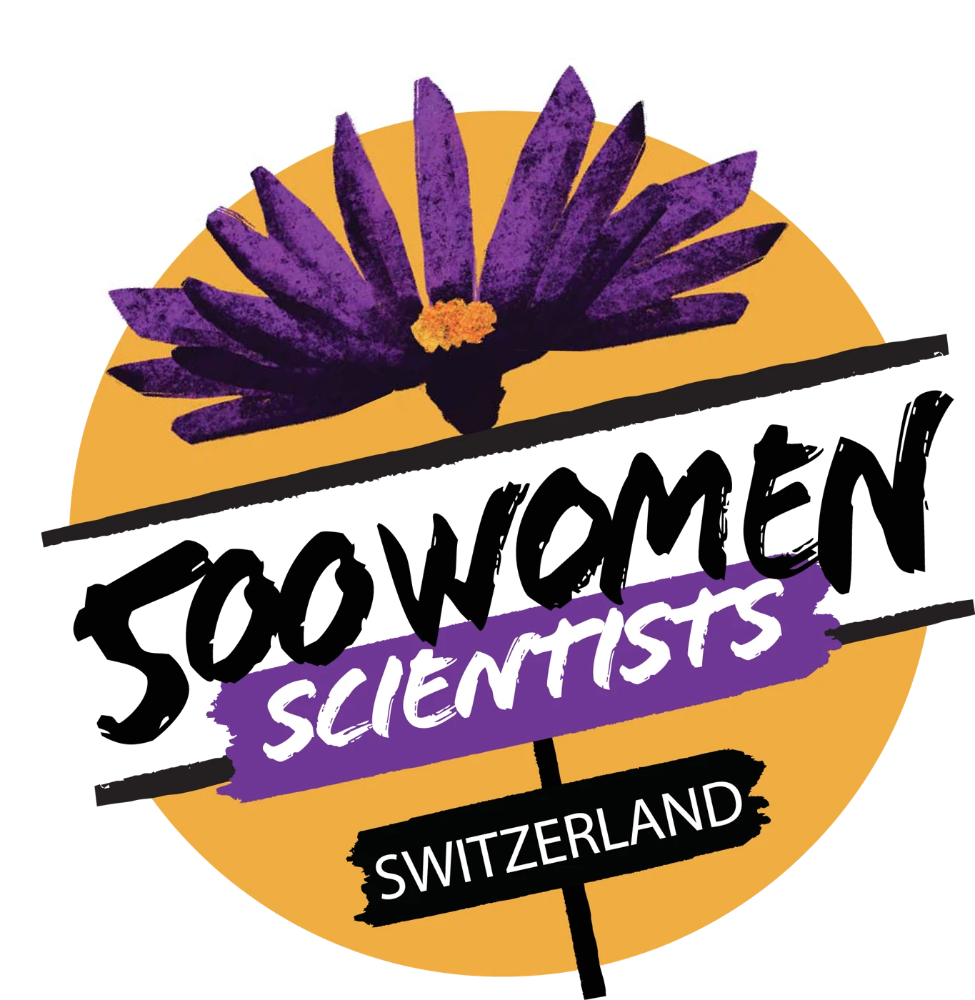
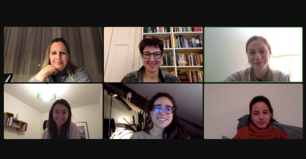

Our story
A local community.
A shared purpose.
We believe that science should be open, inclusive and collaborative. Our pod brings that belief to life in Bern and Fribourg.

Who are we?
The Bern-Fribourg pod of 500WS was founded in 2019 by Claudia Kasper and Meike Ramon as they strongly felt that the Swiss capital needed its own chapter to locally tackle issues relating to women in science, technology, engineering and mathematics (STEM) and to solidify an open support network. The mother organization was founded in the U.S in 2016. Since then, many cities around the world have founded their own independent chapters (which are called pods). 500WS Bern-Fribourg functions as a complementary association to university-led career support or mentoring programs for women. We are a grassroots initiative that is independent of specific universities or research institutions. We follow a bottom-up approach: our members decide, organize and carry out all of our activities.
What brings us together
Our goals
Our main goals are to support women in science and to communicate science to the public. Despite the ongoing efforts and successes in gender equality, women scientists still face many obstacles in their careers and are dramatically underrepresented in higher career positions in academia, research institutions and industry. 500WS Bern-Fribourg aims to promote women scientists in general, and our members in particular, through mutual support and increased visibility.
-
We organize exchange and networking activities with women leaders in STEM and institutions providing support to scientists.
-
We are committed to improving the working conditions of women scientists, since we believe that these often underlie the loss of talented women along our career progression.
-
We engage in science communication, as our mission is to make science more open, inclusive, collaborative and transparent for everyone.
-
We strive for diversity on many levels – we are open to all career stages and all types of careers (i.e. academia, research institutions, NGOs, science communication, policymaking, industry). We particularly welcome female researchers that come from abroad and from underrepresented minorities.

The following describes the Swiss association and its founding committee in February 2022.
The Association 500 Women Scientists Switzerland is an umbrella non-profit organization that supports networking of female-identifying individuals and gender minorities in science and research, as well as science communicators and administrators of research funds in Switzerland.
Our goals are:
Organizing exchange and networking activities with women in STEMM
Advocacy to improve the working conditions of women scientists
Engagement in science communication
The members of the association are divided as follows:
-
Full members
-
Associated members
-
Honorary members
Our first steering committee was hold online on the 8th of February 2022
From left to right, top to bottom, Andrea Fortier (Full Member), Claudia Kasper (The Chair), Oksana Iamshanova (Networking Officer), Giovanna Brancati (The Vice-Chair), Serafina Calarco (The Treasurer), Ana I. Benítez Mateos (The Secretary).

There’s a place for you here
Bring your curiosity.
Find your community.
Every discipline. Every career stage. Join a local network of women making science more open and inclusive.